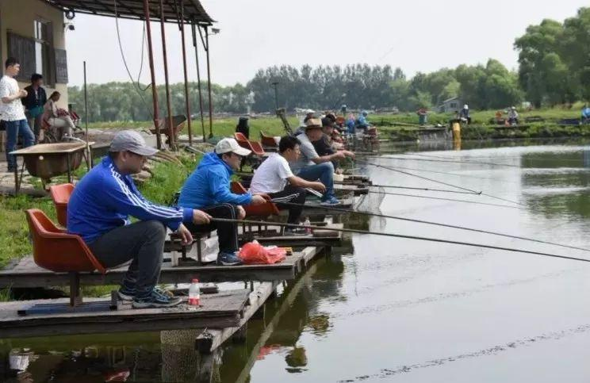

Weekend Activities (Elderly)
Physical activity can increase the strength of the heart, increase the blood flow of coronary artery (the blood supply artery of the heart), improve the regulation of the heart muscle, reduce cholesterol, promote the dissolution of blood clots, etc., so it is conducive to the prevention and treatment of hypertension and atherosclerosis.Physical activity can make the elderly feel comfortable, relieve mental tension and anxiety, and help them sleep. Physical activity can improve people's lung function, is conducive to the prevention and treatment of cold and tracheitis. Physical activity can enhance the secretion and peristalsis of gastrointestinal tract, promote appetite, improve gastrointestinal function, and keep bowel movement unobstructed. It can prevent muscle atrophy, osteoporosis, make the movement flexible and light. Physical activity is also conducive to weight loss and control of diabetes, hypertension, coronary heart disease.
Official Activities
Singing Contest For Middle Aged And Old People
Songs are the most direct way to express emotions. Every year, there are choral competitions of different sizes and characteristics. The feature of this competition is that the main force of all the participating teams are the elderly over the age of 50.
"Healthy And Happy Together" Calligraphy And Painting Competition For The Elderly
Some people compare practicing calligraphy and painting to "Qigong exercise without Qigong.". First of all, calligraphy pays attention to ideas. When practicing it, one must be calm, attentive and free from distractions, which is similar to the breathing exercise and mindfulness of Qigong; Secondly, calligraphy and painting all pay attention to posture, which requires that the head be upright, the shoulders be level, the chest be open and the back be straight, the wrist be suspended when lifting, and the whole body strength be concentrated on the upper limbs, which is very close to the posture of qigong practice.

Cool Summer Fishing Fun Unlimited Fishing Activities
Most of the places suitable for fishing are in the suburbs. It's a kind of exercise to go for a walk in the suburbs; Secondly, the riverside air is extremely fresh with high content of negative ions, which makes people feel carefree and happy. It is conducive to the metabolism of the human body, and can play the role of calming, hypnosis, reducing blood pressure and reducing fatigue; In addition, when you wait for the fish to take the bait, you will feel happy and relaxed, so as to achieve the best health state of no worries inside and no worries outside.
Square Dance Fitness Activities
Experimental research shows that even if the slow dance in social dance, its energy consumption is 3-4 times as much as people in a quiet state; Secondly, when dancing, the dancer should be in harmony with the music. He must concentrate on the music and dance steps. In addition to the relaxed and pleasant music accompaniment and charming lighting, it is not only a kind of beauty enjoyment, but also a kind of intoxication.
Close